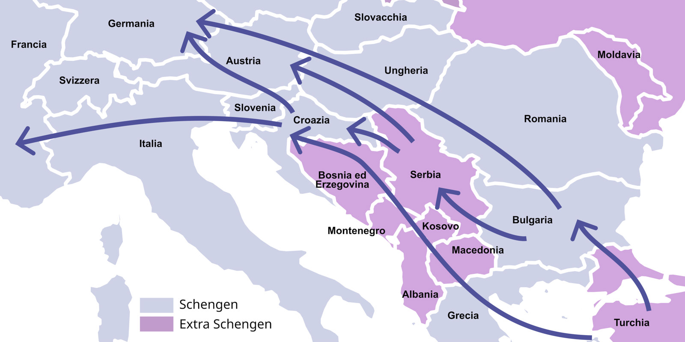

ROTTA BALCANICA
Cos'è la Rotta Balcanica?

I flussi migratori verso l’Europa non riguardano solamente il mar Mediterraneo. Molte persone percorrono quella che viene chiamata “rotta balcanica”, un percorso che parte dai paesi del Medio Oriente o dalla Turchia e, attraversando tutta la penisola balcanica, arriva alle porte dell’Europa. Durante il lungo viaggio, le persone in movimento vivono in situazioni precarie dentro campi rifugiati sporchi, freddi e senza servizi e/o rimangono bloccati per mesi in case abbandonate lungo i confini senza cibo, vestiti, possibilità di lavarsi o ricevere cure mediche. In questa situazione di estremo disagio la loro vita è spesso legata alle decisioni dei trafficanti e alla dura repressione della polizia. La maggior parte delle persone che intraprende questa rotta entra nel nostro territorio e rimane invisibile fino al momento della richiesta di asilo.